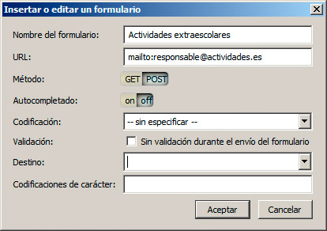
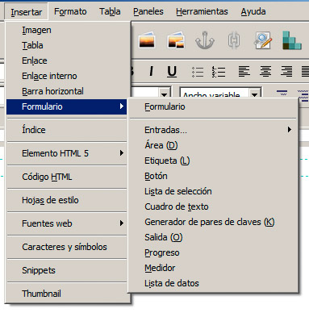

Una vez más los editores web vienen a nuestro rescate, permitiéndonos mantener un conocimiento más relajado de toda la sintaxis de un formulario. Podremos insertar todo tipo de campos con facilidad. En BlueGriffon seguiríamos un procedimiento similar a éste:
1. Abrimos la aplicación y creamos un documento nuevo.
2. En el menú Insertar seleccionamos la opción Formulario>Formulario.
3. En la ventana de la figura estableceremos los datos básicos del formulario y hacemos clic en Aceptar.

4. El formulario se muestra delimitado por una línea azul. A partir de aquí podemos crear contenidos dentro del formulario o fuera. Incluso podemos crear más formularios dentro de la página.
5. Para insertar un campo, haremos clic en el interior de la zona azul y seleccionaremos una de las opciones del menú Insertar>Formulario, que se recogen en la figura:

6. En la categoría Entradas encontramos todos los elementos denominados <input>, así como otros que se están incorporando en la actualidad en el desarrollo de HTML5. En todos los casos, al seleccionar un tipo, aparecerá una ventana desde la que estableceremos los datos básicos del campo.
Es así de sencillo; luego sólo debemos ir incorporando los campos necesarios, intercalándolos con las etiquetas que aclaren su funcionamiento.
El siguiente vídeo reproduce la creación de un formulario.
Nota
Algunos otros elementos como <progress> y <meter> no están directamente vinculados con los formularios, aunque el autor de la aplicación ha estimado que es un buen lugar para ubicarlos. Estos dos elementos, en concreto, se emplean para realizar barras de progreso y de medición.
Actividad 3
Diseñaremos un formulario con un editor web que incluya al menos 6 tipos de campos diferentes. Para hacer las pruebas, podemos crearlo con una acción de tipo mailto. Así podremos comprobar qué resultados se envían al componer el correo electrónico.